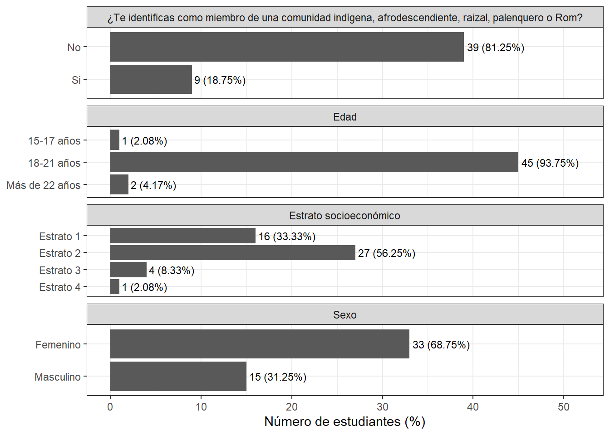
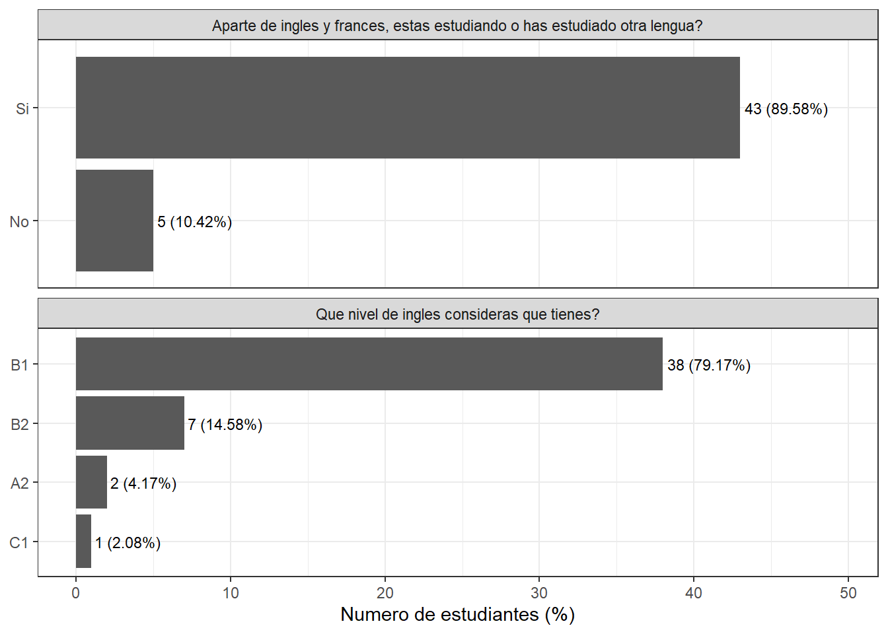
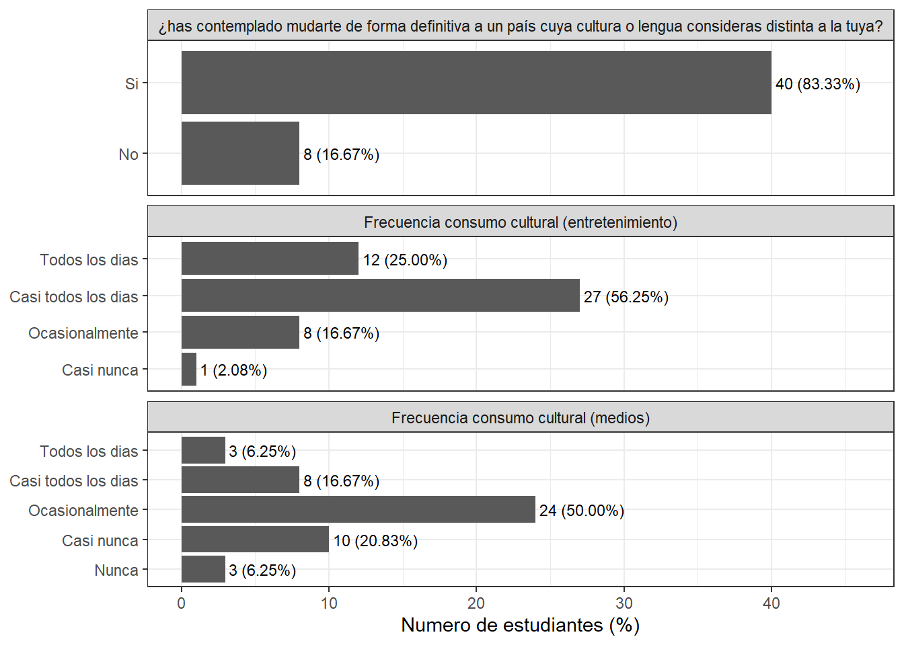

Capítulo 3 Análisis exploratorio de la sensibilidad intercultural
Aquí realizaremos el análisis exploratorio de los datos del pretest y postest con los grupos de control y experimental.
3.1 Análisis exploratorio de las variables sociodemográficas
| Variable | Categoría | n = 48 | porcentaje |
|---|---|---|---|
| Edad | 15-17 años | 1 | 2.08 |
| Edad | 18-21 años | 45 | 93.75 |
| Edad | Más de 22 años | 2 | 4.17 |
| Estrato socioeconómico | Estrato 1 | 16 | 33.33 |
| Estrato socioeconómico | Estrato 2 | 27 | 56.25 |
| Estrato socioeconómico | Estrato 3 | 4 | 8.33 |
| Estrato socioeconómico | Estrato 4 | 1 | 2.08 |
| Lugar donde has vivido la mayor parte de tu vida | Sincelejo | 33 | 68.75 |
| Lugar donde has vivido la mayor parte de tu vida | Corozal | 3 | 6.25 |
| Lugar donde has vivido la mayor parte de tu vida | El Roble | 2 | 4.17 |
| Lugar donde has vivido la mayor parte de tu vida | Magangué | 2 | 4.17 |
| Lugar donde has vivido la mayor parte de tu vida | Betulia | 1 | 2.08 |
| Lugar donde has vivido la mayor parte de tu vida | Cereté | 1 | 2.08 |
| Lugar donde has vivido la mayor parte de tu vida | Chinú | 1 | 2.08 |
| Lugar donde has vivido la mayor parte de tu vida | Los Palmitos | 1 | 2.08 |
| Lugar donde has vivido la mayor parte de tu vida | Morroa | 1 | 2.08 |
| Lugar donde has vivido la mayor parte de tu vida | Sampués | 1 | 2.08 |
| Lugar donde has vivido la mayor parte de tu vida | San Marcos | 1 | 2.08 |
| Lugar donde has vivido la mayor parte de tu vida | Tuchín | 1 | 2.08 |
| Sexo | Femenino | 33 | 68.75 |
| Sexo | Masculino | 15 | 31.25 |
| ¿Te identificas como miembro de una comunidad indígena, afrodescendiente, raizal, palenquero o Rom? | No | 39 | 81.25 |
| ¿Te identificas como miembro de una comunidad indígena, afrodescendiente, raizal, palenquero o Rom? | Si | 9 | 18.75 |

3.2 Analisis de las variables del perfil académico
Realicemos el análisis exploratorio del perfil académico y la competencia lingüistica donde los estudiantes tienen nivel de avance académico intermedio
| Variable | Categoria | n = 48 | porcentaje |
|---|---|---|---|
| Aparte de ingles y frances, estas estudiando o has estudiado otra lengua? | Si | 43 | 89.58 |
| Aparte de ingles y frances, estas estudiando o has estudiado otra lengua? | No | 5 | 10.42 |
| Que nivel de ingles consideras que tienes? | A2 | 2 | 4.17 |
| Que nivel de ingles consideras que tienes? | B1 | 38 | 79.17 |
| Que nivel de ingles consideras que tienes? | B2 | 7 | 14.58 |
| Que nivel de ingles consideras que tienes? | C1 | 1 | 2.08 |

3.3 Análisis de las variables de consumo cultural externo y proyección intercultural
Ahora, hagamos el análisis exploratorio del concumo cultural externo y la proyección intercultural
| Variable | Categoria | n = 48 | porcentaje |
|---|---|---|---|
| Frecuencia consumo cultural (entretenimiento) | Todos los dias | 12 | 25.00 |
| Frecuencia consumo cultural (entretenimiento) | Casi todos los dias | 27 | 56.25 |
| Frecuencia consumo cultural (entretenimiento) | Ocasionalmente | 8 | 16.67 |
| Frecuencia consumo cultural (entretenimiento) | Casi nunca | 1 | 2.08 |
| Frecuencia consumo cultural (medios) | Todos los dias | 3 | 6.25 |
| Frecuencia consumo cultural (medios) | Casi todos los dias | 8 | 16.67 |
| Frecuencia consumo cultural (medios) | Ocasionalmente | 24 | 50.00 |
| Frecuencia consumo cultural (medios) | Casi nunca | 10 | 20.83 |
| Frecuencia consumo cultural (medios) | Nunca | 3 | 6.25 |
| ¿has contemplado mudarte de forma definitiva a un país cuya cultura o lengua consideras distinta a la tuya? | Si | 40 | 83.33 |
| ¿has contemplado mudarte de forma definitiva a un país cuya cultura o lengua consideras distinta a la tuya? | No | 8 | 16.67 |
